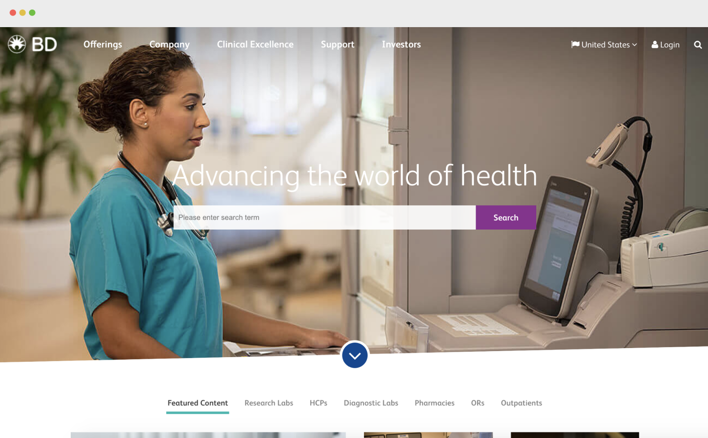

UX Design Internship @BD

Overview
In summer 2019, I joined BD as a UX Design Intern. During the 3 months, I redesigned an internal troubleshooting tool to decrease workflow times for 1500+ support engineers.
Due to privacy concerns, I would be focusing on the high level design process.
Introduction
BD (Becton Dickinson) is a medical technology company that manufactures and sells medical devices, instrument systems, and reagents. BD also provides consulting and analytic services in certain geographies. Founded in 1897 and headquartered in Franklin Lakes, New Jersey, BD employs nearly 76,000 people in more than 50 countries throughout the world.
Solo design intern on a cross functional team
I had the opportunity to work as a UX Design intern at BD on the Technology Solution team. For the Technology Solution team, my primary role was user experience and interaction design.
With other interns (5 engineers and 1 PM), we designed and developed an application that helps hundreds of engineers to better troubleshoot medical devices in a cloud based platform.
Main Project
How did I help 1500+ engineers troubleshoot medical devices more efficiently?
During the three months, I focused on improving the user experience of the web application. I researched on the troubleshooting process, designed user flows, created mid/high fidelity prototypes, conducted user testing, iterated, and assisted in HTML/CSS with front-end engineer on build the web application.
During the research stage, I learned who the users are, the needs, and the current softwares technical context.
Since our users (support engineers) are around the globe, I conducted the user testing via Skype meeting calls with screen sharing. During the user interviews, with 6 technical support engineers, I was able to talk to 6 technical support engineer and learn about their workflow, details of different platforms they are using.
Talking directly to the users allowed me to understand the platforms that I never understood, and details that I would have overlooked. The user testing was powerful in the design process, allowed me to clarify the user pain points, design preferences, and validate my prototypes.
Following the user interviews, I made iterations on the prototype, and conducted second and third rounds of user testing with 5 technical support engineers. Making adjustments based on the iterations was essential.
During the three months, I focused on designing the user experience of the web application. I researched on the troubleshooting process, designed user flows, created mid/high fidelity prototypes, conducted user testing, iterated, and assisted in HTML/CSS with front-end engineer on build the web application.
By the end of the internship, our team was able to push the web application (It’s live!). The most rewarding part was the user’s reactions when I showed him/her our final product. “Oh my god, I love this! When can I get to use it?” one user said. These moments remind me how meaningful ux design is, and how UX really impacts users.
On the last day, we gave a final presentation to the president of medical management solutions, stakeholders, and leaders/managers from BD.
Passion Project
I designed a T-Shirt for BD!
One thing I learned during my internship is to be willing to help and constantly ask for more. Throughout the internship, I told my manager that I could assist in additional work if needed.
One day, my manager came and asked me if I was interested in designing a T-Shirt for his team. The RSS (Remote Support Service) team had a new release of the software and new t-shirt for the team was needed.
I was thrilled at this opportunity and start sketching for ideas.
After exploring some designs, I decided on isometric design, since it is one of the latest design trends and it would work well with BD’s medical devices. Isometric design is the combination of flat design and 3D design, without converging perspective lines.
Here are some of the design explorations: